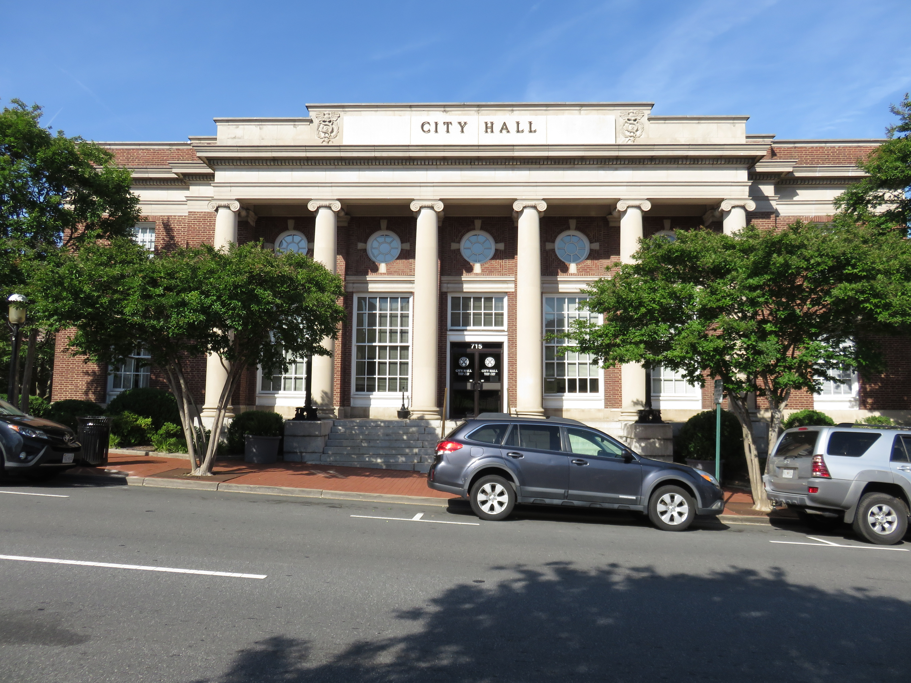

Stafford, Wednesday, October 7 — Accokeek Center data center rezoning and substation CUP (Board items 25 and 26)
The county packet is posted. The county minutes are not. Item 25 is a public hearing to rezone about 120.88 acres from A-1/A-2/B-3 to M-2 (O26-16 approve / R26-127 deny) for up to 590,000 square feet of data center in two buildings up to two stories. Item 26 is a conditional use permit for an electric substation on the same parcels (R26-128 approve / R26-129 deny). Site: west side of Richmond Highway about 2,500 feet north of Eskimo Hill Road, next to I-95, bordering Accokeek Creek, a Critical Resource Protection Area and floodplain. Falmouth District. Planning Commission voted 4-3 on August 26 to recommend approval. Proffers in the staff memo: reuse water as the sole cooling source, no potable water, air cooling as fallback; 45 acres of tree preservation; a 55 dB(A) noise cap. Fiscal impact field reads “N/A.” VOTE: minutes not posted — CivicClerk event 2681 shows Agenda and Agenda Packet only, checked October 15. Press reported a 4-3 approval; this porch does not print a roll call the county has not posted.